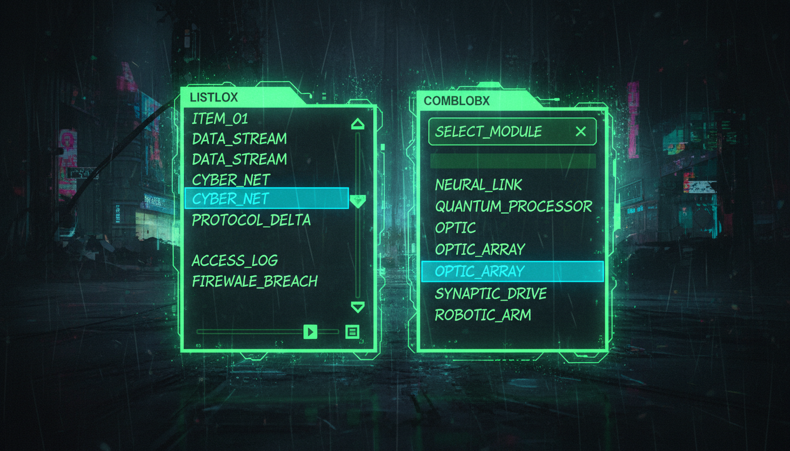

Випадаючі списки, вибір елементів, додавання/видалення

// Список
ListBox^ lst = gcnew ListBox();
lst->Location = Point(20, 20);
lst->Size = Size(200, 150);
// Додавання елементів
lst->Items->Add("C++");
lst->Items->Add("C#");
lst->Items->Add("Python");
lst->Items->Add("Java");
// Вибір
lst->SelectedIndex = 0; // Вибрати перший
lst->SelectionMode = SelectionMode::MultiExtended;
// Отримання вибраного
void OnSelectedChanged(Object^ sender, EventArgs^ e) {
if (lst->SelectedItem != nullptr) {
MessageBox::Show("Вибрано: " + lst->SelectedItem->ToString());
}
}// Випадаючий список
ComboBox^ cmb = gcnew ComboBox();
cmb->Location = Point(20, 180);
cmb->Size = Size(200, 25);
cmb->DropDownStyle = ComboBoxStyle::DropDownList;
// Заповнення
array<String^>^ items = {"Низький", "Середній", "Високий"};
cmb->Items->AddRange(items);
cmb->SelectedIndex = 0;